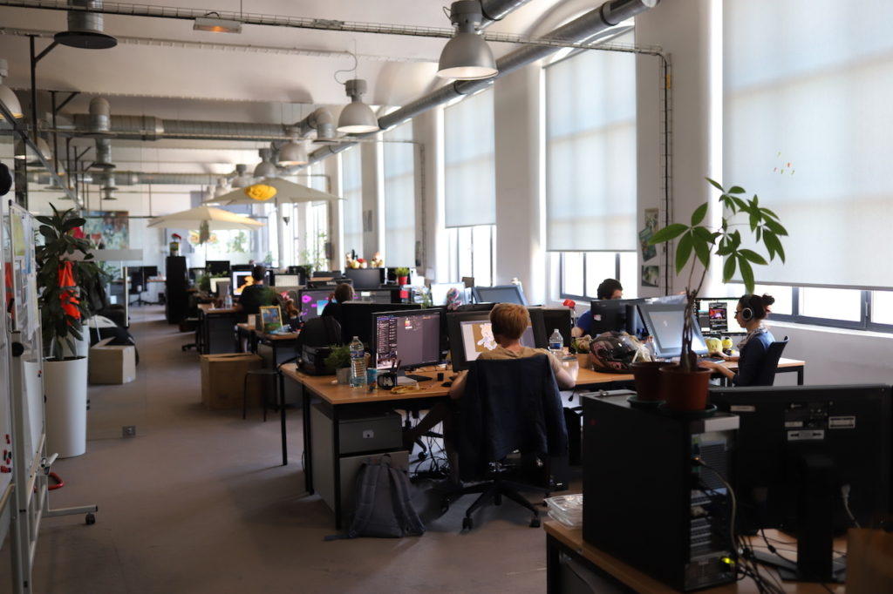
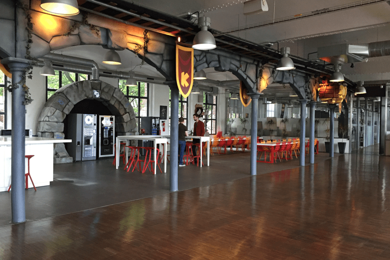
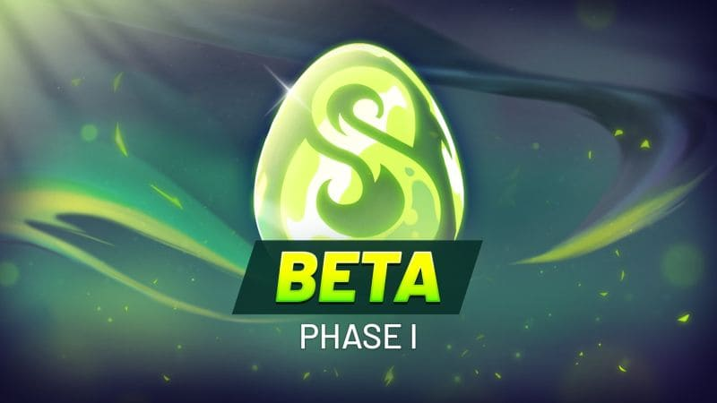
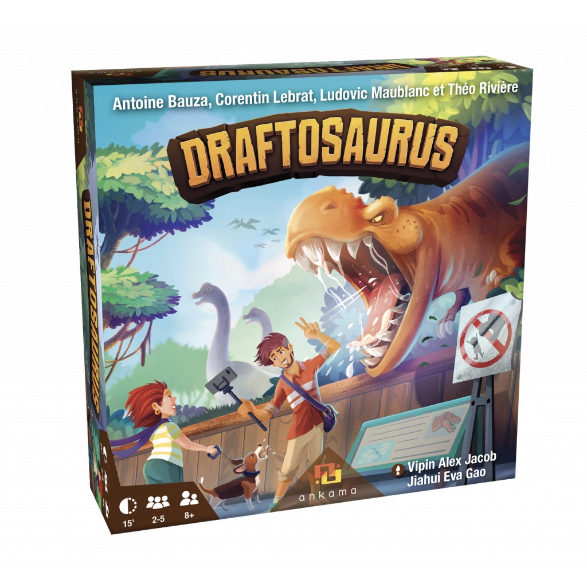
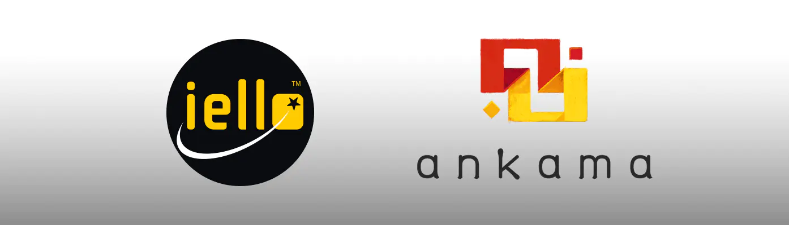
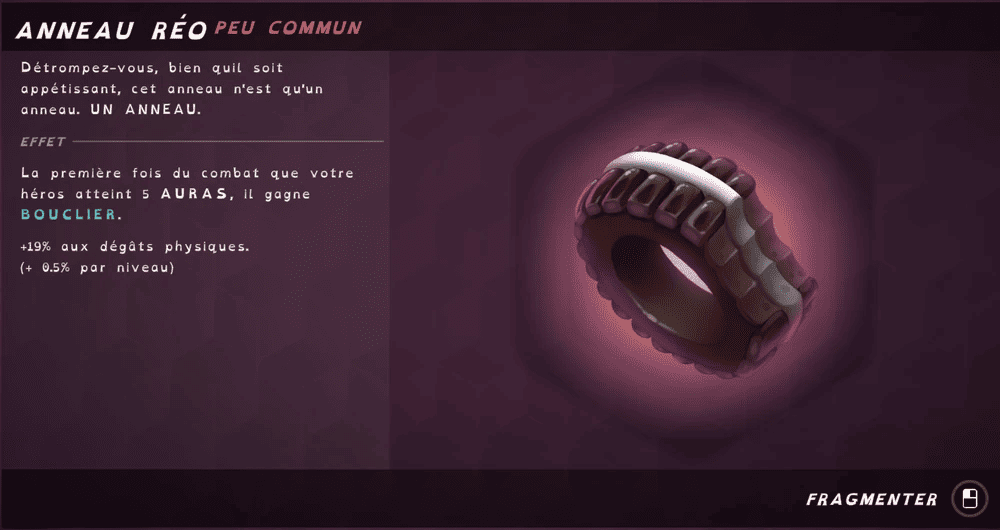
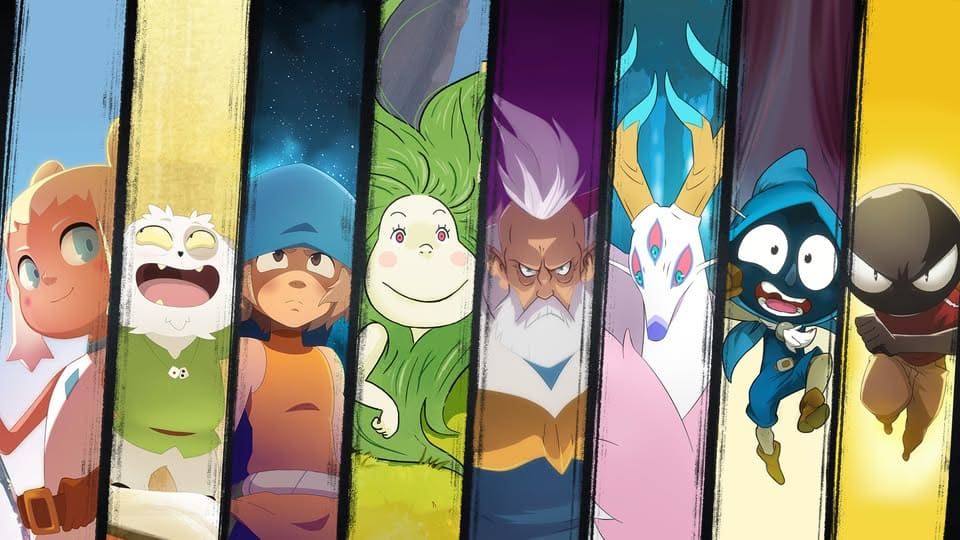
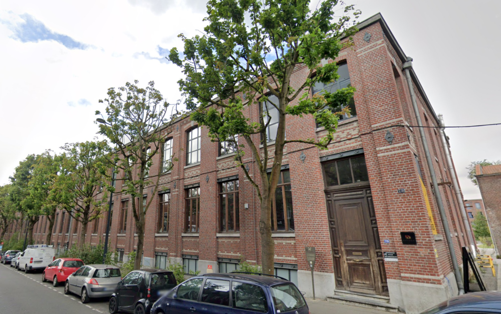

À propos de Ankama
Ankama : C'est quoi ?
Ankama est une société française créée le 15 mai 2001.
Son siège social se situe a Roubaix en France, son activité principal
lors de sa création était le développement web qui fut lancée par 3 amis,
Camille Chafer, Anthony Roux et Emmanuel Darras. Cela à changer dès
2003 car l'entreprise a commencé à créer son premier jeux vidéo connu sous
le nom de Dofus. Celui-ci est réaliser rapidement (en Flash).
Mais il fallut pas moins d'une année pour qu'il soit distribué. Après ce premier succès elle se
lança dans la cŕeation
d'autre jeux-vidéo et aussi d'une série animée nommé Wakfu qui fut aussi adapter en jeux.
D'ailleurs son nom provient de la contraction de Anthony , Kamille et de
emmanuel.


Les spécialités
Ankama est une société de développement de jeux vidéo mais a aussi créé une série d'animation nommée Wakfu celle-ci fut aussi adaptée en jeux vidéo du même nom Wakfu. Ils ont aussi cŕee des jeux de société mais reste principalement connu grâce a ses jeux : Dofus, Wakfu, Waven, etc. ( Voir page production pour plus d'information )


Draftosaurus le partenariat de ANKAMA et IELLO
Un partenariat avec IELLO qui est aussi une entreprise de jeux de société connue pour Draftosaurus qui est un jeux sur plateau. Le partenariat permet pour Ankama d'agrandir son univers ainsi que de faire de la publicité et inversement pour IELLO. Draftosaurus est un jeux sortie en 2019 et a été plusieurs fois récompensé et a reçue une nomination à l'As d'Or du meilleur jeu pour enfants. IELLO permet aussi de pouvoir permettre à Ankama de mieux vendre ses jeux de société qui sont moins connues.


Notre Univers
Ankama se distingue des autres compagnies de jeux notamment pour son sens de l'humour dans ses jeux car pour le noms des objets tels que des bracelets, anneaux ou autre qui vous donneent des petits avantages ceux-ci porte souvent des noms originaux et amusants comme l'anneau Reo ci dessous tirée du biscuit Oréo. Il n'y pas uniquement les objets les pnj (personnage non jouable) ou les monstres on des noms atypiques allant jusqu'a avoir le nom de ces creáteur commes les Chaffers qui sont des squelettes qui sont tirés du nom de Camille Chafer.
Exemple d'anneau ->


Les différents locaux
Ankama possède plusieurs locaux dont son siège social situé à Roubaix. L'entreprise possédé 3 autre locaux mais ceux-ci ont fermé en ne laissant que celui a Roubaix encore en fonction. Il y a de forte chance qu'ils ont fermé à cause du manque de moyens car à un moment il manquait de financement ce qui avait provoqué beaucoup de problèmes dans l'entreprise. Mais l'entreprise a aussi d'autres locaux a l'international comme au Japon, Canada et dans d'autre pays d'Asie.
